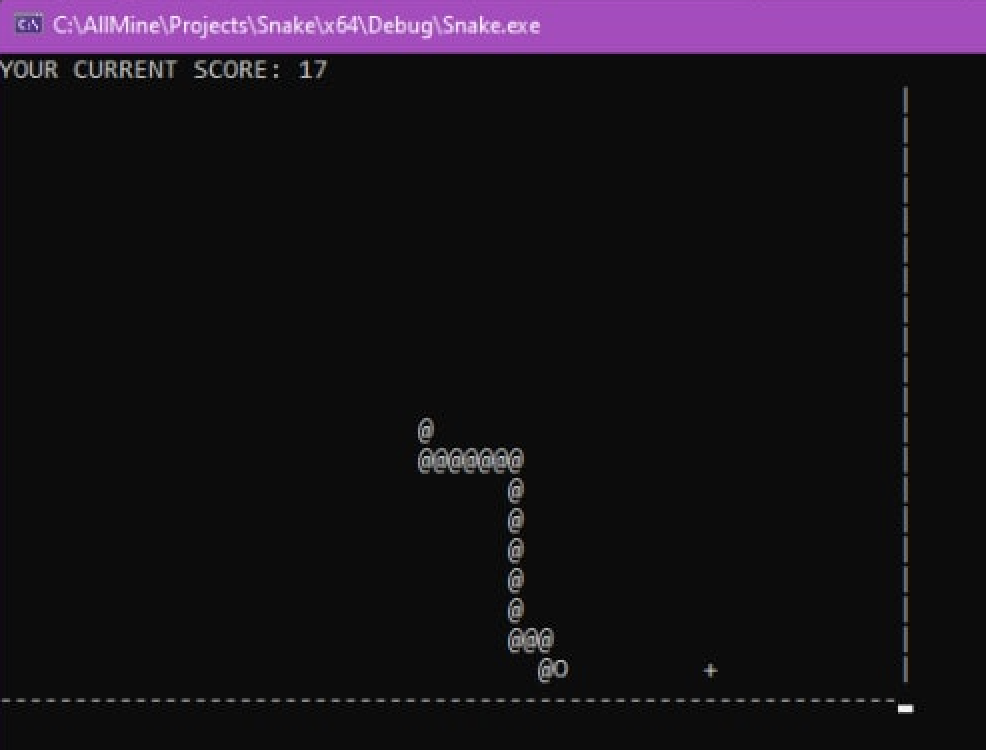
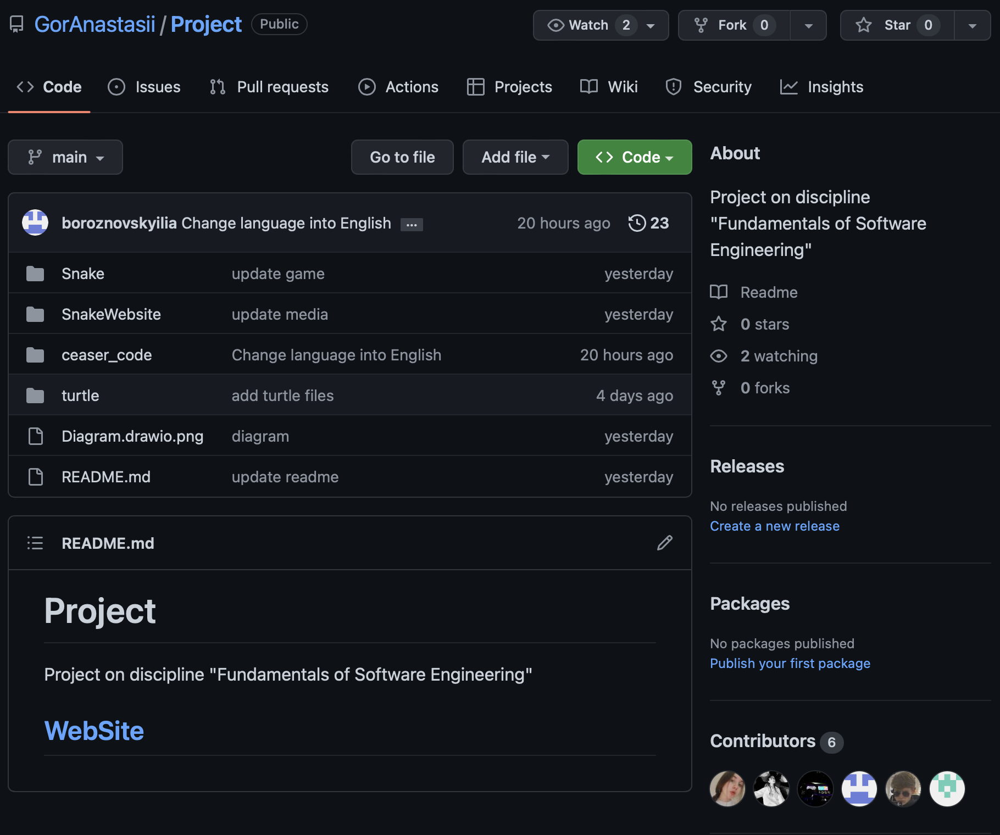

Snake game
Консольная игра из 70-ых в жанре Snake. Snake-это жанр видеоигр, в котором игрок маневрирует растущей линией, которая становится основным препятствием для него самого..
Игровой процесс
Игровой процесс представляет собой классический геймплей игры “Змейка”, где игроку необходимо, управляя тонким существом , похожим на змею, собирать объекты, символизирующие еду (фрукты) и увеличивающие длину самой змейки. Для управления игроку предоставляются 4 клавиши на клавиатуре, с помощью которых необходимо избегать препятствий и собирать еду, изменяя направление движения змейки на плоскости.
Цели и структура проекта
Главной целью данного проекта является создание консольной игры на языке C++, используя навыки полученные во время обучения, а также источники, содержащие дополнительную полезную информацию.
Проект полностью написан на C++. При разработке использовались библиотеки:
iostream, random и conio.h.
Основная структура проекта представляет собой один главный модуль вызывающий
подключённые к нему 2 других модуля. Модули взаимосвязанны между собой. То есть
существуют переменные передаваемые из одного модуля в другой.
Git Hub
О нас
Студенты Белорусского государственного технологического университета, специальность ПОИТ группа 5,
подгруппа 1.
Нашей великолепной командой была реализована консольная игра змейка, безусловно это далеко не лучшая разработка в мире, однако я очень рад, что стал частью столь прекрасного и дружного коллектива. Спасибо Вам, друзья ♥
Оценить отдельный вклад каждого в данную работу - невозможно, ибо мы делали все совещаясь и помогая друг другу в реализации самых различных задач.
Команда проекта
Настя
Дима
Афоня
Вита
Илья
Леша